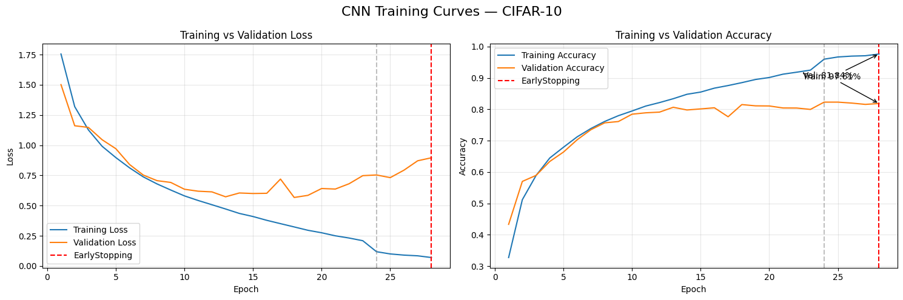
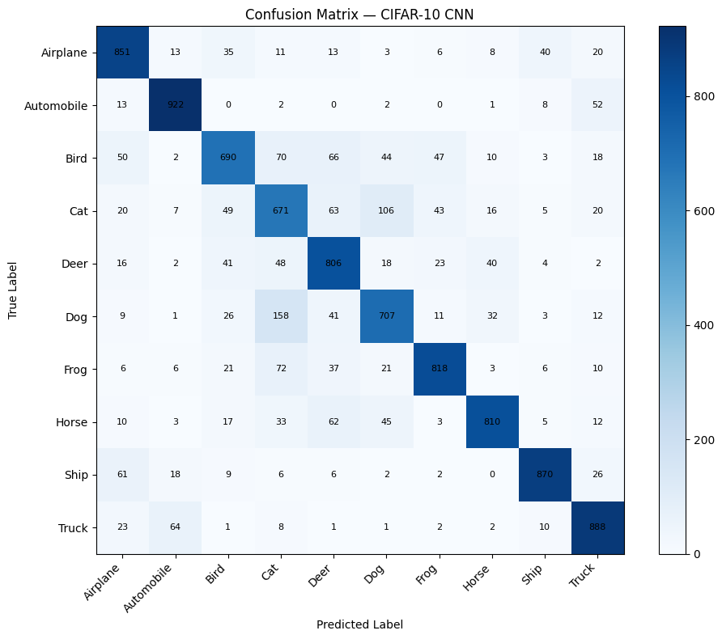
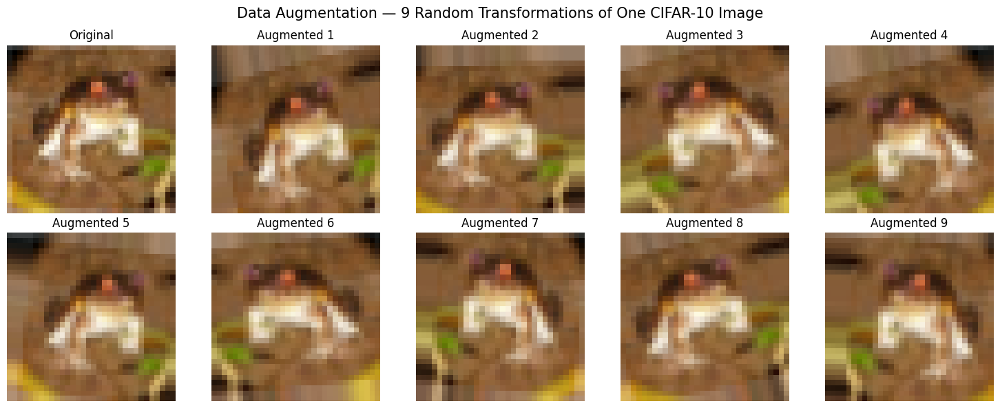
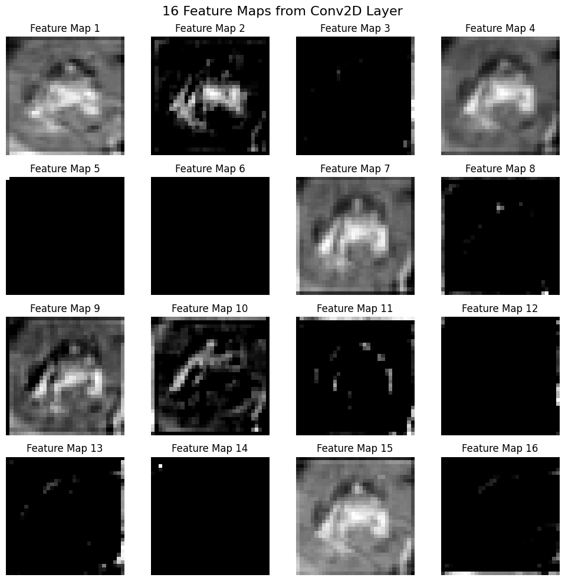

🧠 CIFAR-10 Image Classification
Deep Learning PR4 — Project A
CNN from Scratch • Data Augmentation • MobileNetV2 • Fine-Tuning • Residual Connections
CNN Scratch + ImageDataGenerator
84.61%📌 Project Overview
This project develops a complete CIFAR-10 image-classification workflow, progressing from convolution fundamentals to a custom CNN, augmentation, MobileNetV2 transfer learning, fine-tuning, and residual connections.
🗃️ CIFAR-10 Dataset
50,000 training images and 10,000 test images, each 32×32 RGB, across airplane, automobile, bird, cat, deer, dog, frog, horse, ship, and truck classes.
from tensorflow.keras.datasets import cifar10
(X_train, y_train), (X_test, y_test) = cifar10.load_data()
X_train = X_train.astype("float32") / 255.0
X_test = X_test.astype("float32") / 255.0🧪 Project Topics
📊 Final Model Comparison
| Model | Architecture | Augmentation | Transfer Learning | Test Accuracy | Parameters |
|---|---|---|---|---|---|
| LeNet-5 | LeNet-5 | No | No | 53.45% | 62,006 |
| CNN Scratch No Aug | Custom CNN | No | No | 80.33% | 175,018 |
| 🏆 CNN Scratch + Aug | Custom CNN | ImageDataGenerator | No | 84.61% | 175,018 |
| CNN + Keras Aug Layers | Custom CNN | Keras Layers | No | 79.89% | 175,018 |
| MobileNetV2 Feature Extraction | MobileNetV2 | No | Feature Extraction | 79.41% | 2,423,242 |
| MobileNetV2 Fine-Tuned | MobileNetV2 | No | Fine-Tuning | 80.83% | 2,423,242 |
📈 Key Findings
- ImageDataGenerator improved the custom CNN from 80.33% to 84.61%: +4.28 percentage points.
- MobileNetV2 fine-tuning improved accuracy from 79.41% to 80.83%: +1.42 percentage points.
- The augmented custom CNN achieved the highest accuracy while using substantially fewer parameters than MobileNetV2.
🖼️ Saved Project Plots
If this HTML is kept beside the plots/ folder, the following project outputs will display automatically when those files exist.
Training Curves

Confusion Matrix

Data Augmentation

Feature Maps

Transfer Learning

Final Results

🛠️ Technologies
Python • TensorFlow • Keras • NumPy • Pandas • Matplotlib • SciPy • Scikit-learn • Jupyter Notebook
📌 Conclusion
Among the six evaluated approaches, CNN Scratch + ImageDataGenerator performed best with 84.61% test accuracy. The experiment demonstrates the practical value of augmentation and shows that a compact custom CNN can outperform a substantially larger transfer-learning model for this particular training setup.